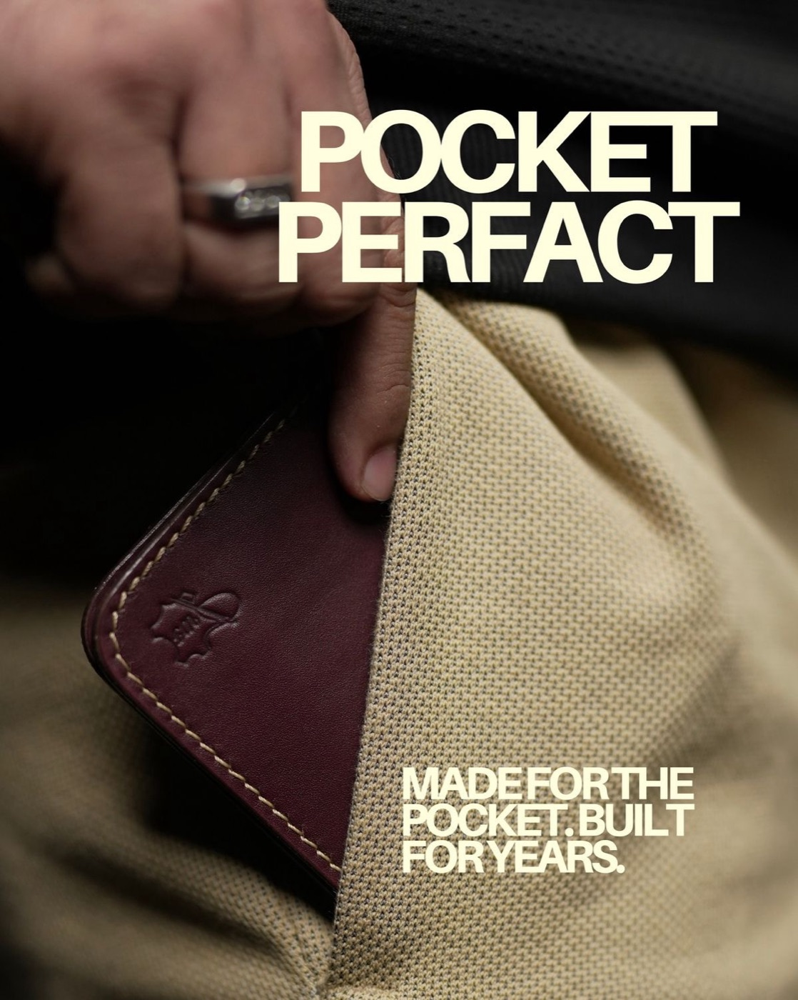
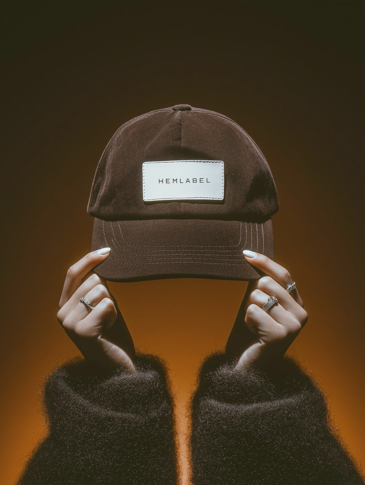
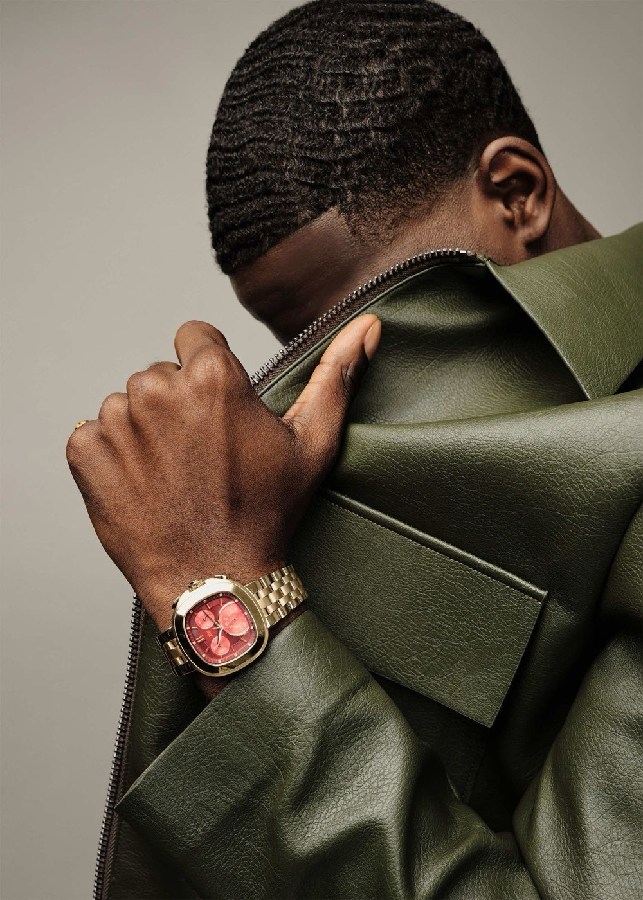

Derived from the inspo-2 reference board · IMG_4041–4062
SPECTA
A LOOK YOU CAN
REPEAT — Simply Spectacular
A working visual system pulled straight from the saved Pinterest references in inspo-2/. It decodes what makes those frames feel the way they do — light, grade, colour, type, framing — and turns each recurring shot into a paste-ready recipe so new SPECTA visuals land in the same world every time.



